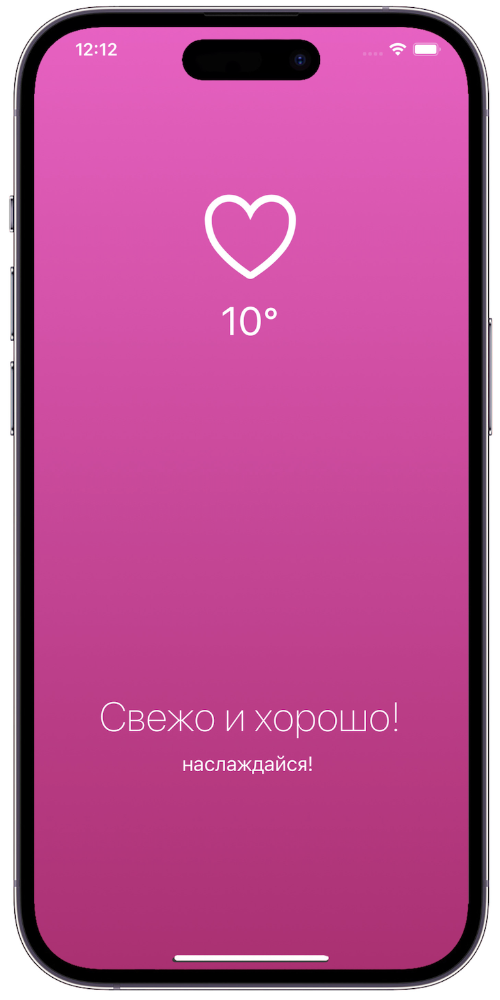
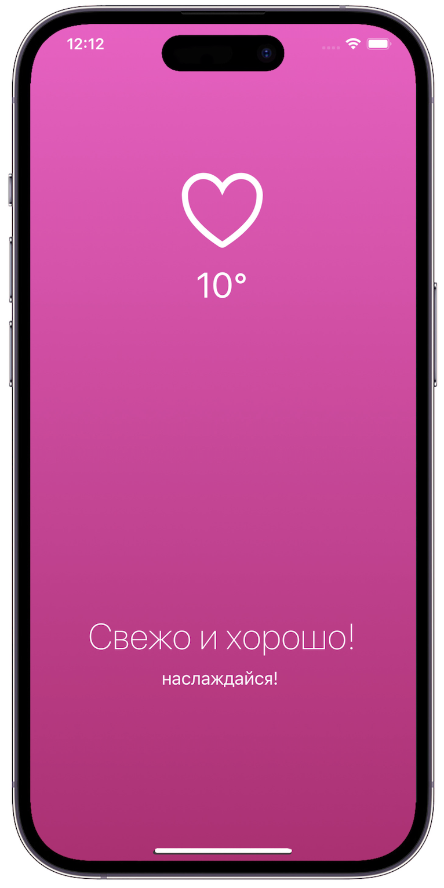

Maxim Tertyshnyi | Frontend Developer
 


As mentioned before I am a multidisciplinary designer working in the fields of graphic and product design, motion, and 3D.
At Tilda, I gained experience as both a graphic and web designer. While on product, I created product and launching features landing pages, developed interfaces for internal products, and new website templates. On brand, I created visual content (both static and motion) as a key member of the small team. My role was focused on brand awareness and maintained Tilda’s visual style of communications.
I supported myself at the university by working as a freelance designer on projects that stimulate my curious side. These can vary from product and web to editorial design or identity. I designed an educational app for learning English with included notifications, launched landing pages, online stores, created design content for presentations, commercial proposals, branding projects, logos, and infographics.
[ EXPERIENCE ]
Yandex Practicum: Mesto
the site is an analogue of Instagram
Yandex Practicum: Mesto
the site is an analogue of Instagram